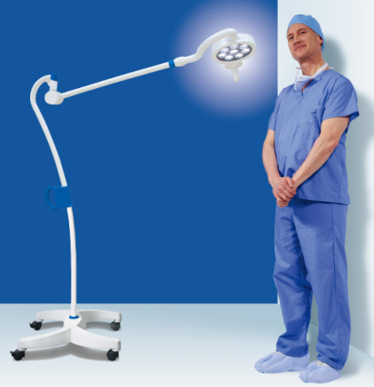
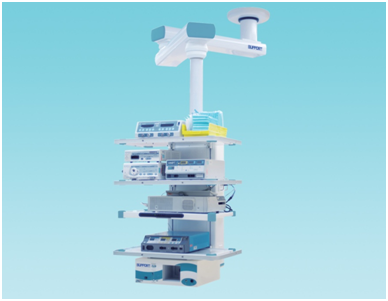
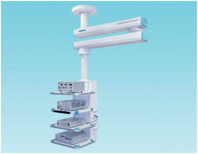
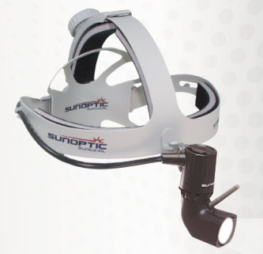
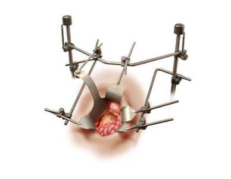
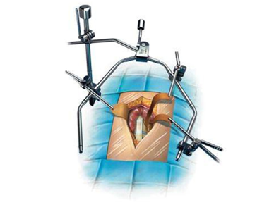
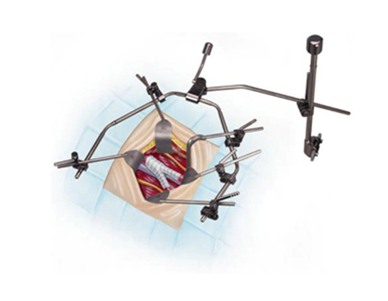
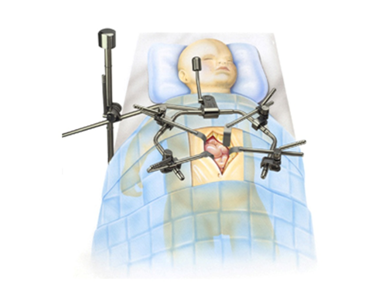
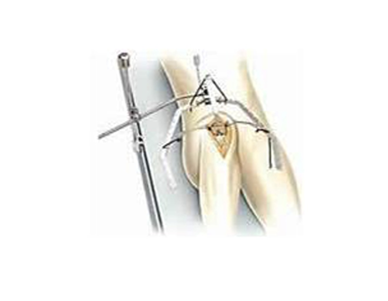

02产品中心 · Products
产品中心
七条产品线，覆盖智慧手术室、照明与吊塔、手术头灯、专科牵开器与输液加温

全光纤一体化手术室
数字一体化智慧手术室整体方案：影像、显示、示教与远程手术云平台集成于一体
查看详情
AMI LED手术无影灯
AMI 与 SYSTEM TWO LED 手术无影灯、检查灯，以及 Navigator / SUPPORT 多功能医用吊塔
查看详情
AMI LED高级检查灯
AMI 与 SYSTEM TWO LED 手术无影灯、检查灯，以及 Navigator / SUPPORT 多功能医用吊塔
查看详情
SYSTEM TWO LED手术无影灯
AMI 与 SYSTEM TWO LED 手术无影灯、检查灯，以及 Navigator / SUPPORT 多功能医用吊塔
查看详情
SUPPORT多功能专业医用吊塔
由1个历史悠久的专业厂家生产，行业专家的潜心研发，历经多年的临床使用验证，安全性、先进性达到遥遥领先水平；
查看详情
Navigator多功能专业医用吊塔
由1个历史悠久的专业厂家生产，行业专家的潜心研发，历经多年的临床使用验证，安全性、先进性达到遥遥领先水平；
查看详情
新一代氙光源手术头灯
氙光源与 LED 手术头灯，可选配全高清摄像系统，记录主刀视野
查看详情
便携式LED医用头灯
氙光源与 LED 手术头灯，可选配全高清摄像系统，记录主刀视野
查看详情
新一代氙光源手术头灯及全高清摄像系统
氙光源与 LED 手术头灯，可选配全高清摄像系统，记录主刀视野
查看详情
奥美普外牵开器
采用叉形臂框架系统
查看详情
奥美移植牵开器
采用双支撑臂的叉形臂框架系统，符合移植手术超大术野暴露的需要
查看详情
奥美脊柱外科牵开器
致力于采用可透X光拉钩，符合骨科手术术中透视的特殊要求
查看详情
奥美血管外科牵开器
专业血管外科牵开器，采用血管外科专用拉钩
查看详情
奥美小儿外科牵开器
专业小儿外科牵开器，采用小儿外科专用拉钩
查看详情
奥美泌尿外科牵开器
专业泌尿外科牵开器，采用泌尿外科专用拉钩
查看详情
奥美髋关节牵开器
专业髋关节手术牵开器，采用髋关节手术专用拉钩
查看详情
奥美膝关节牵开器
专业膝关节手术牵开器，采用膝关节手术专用拉钩
查看详情
奥美腔镜手术牵开器
专业腔镜手术牵开器
查看详情
腹部手术牵开器
普外科：肝胆、胰腺、胃肠手术
查看详情
暖宝快速输液恒温仪
人性化设计输液恒温加温仪，即时加温；
查看详情
UV24消毒机
UV24 手术室环境消毒设备，守护洁净手术环境
查看详情没有找到匹配的产品，换个关键词试试
—联系康迎